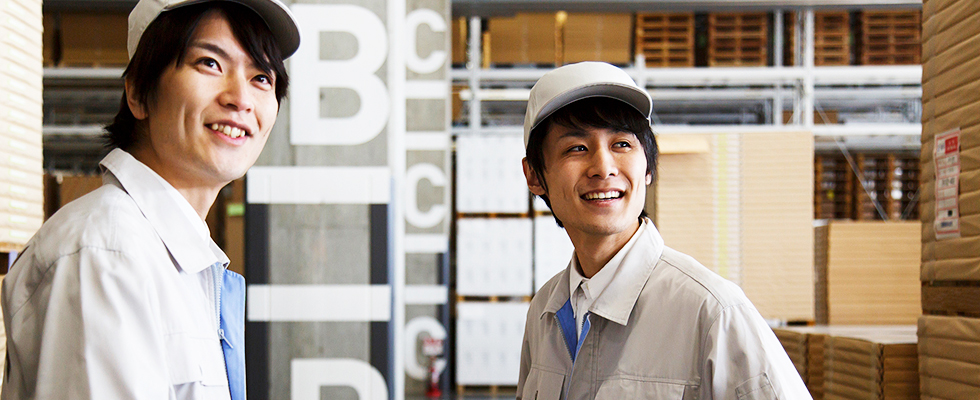
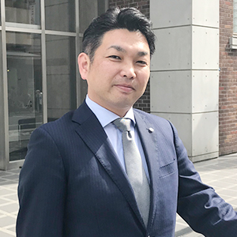
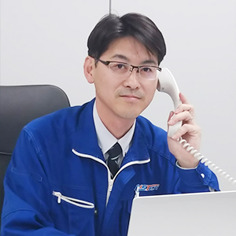
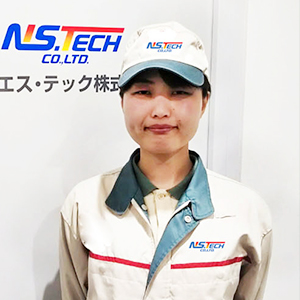

当社では、技術の習熟度や実力に応じて、キャリアアップ制度を準備しています。
イチからスキルを身に付け、それを活かして活躍できるフィールドが整っていますので、
じっくりと腰を据えて働きたいという方は、ぜひこの制度を活用して活躍の場を拡げてください。

-
入社時及び、昇級時に随時スキルアップのための研修を実施しております。製造での就業経験のない方でも、安心して就業して頂けます。 -
当社には、現場スタッフとして入社をし、現場監督を経て、今では役職者として会社を引っ張っている社員がたくさんおります。
正社員としての登用はもちろん、現場リーダーとしてだけではなく、会社のリーダーとしても活躍ができる点が魅力です。

-
職場対応力を見極める
社会人として基本を極める
-
技能レベルの自信を付ける
作業以外の幅広い対応力を
身に付ける -
自身の技能レベルを見極める
将来の自分を見極める
-
さらに
物づくりを
極める技能を高め、
その就業先で必要不可欠な人材となる。
現場の管理能力をさらに高める。 -
労務管理を
極める人事・勤怠管理・営業を含めた総合職の道へ。
物づくりの経験を活かしたスタッフ対応。 -
人材採用を
極める新たな仲間・人材の発掘、物づくりの経験を
活かした職業紹介を。 -
人材教育を
極める現場に求められる
人材教育を企画から担当。
物づくりの経験を
活かした後輩の育成を。

-

-


-

-
-
佐々木(亮) -
友人がその当時弊社請負工程の作業者として働いており、その友人から紹介してもらい入社しました。はじめは弊社の請負工程での作業者からのスタートでした。
当初は、現場の担当の方に仕事を教わっていたのが、次は自分が現場スタッフさんに教える立場になり・・・、今では自分が社員さんのキャリアアップを支援する立場になりました。
-
佐々木(巧) -
当時仙台で働いていたのですが、仕事に疲れて地元に戻ろうとしていた時に、前所長から「もし仕事を探しているのなら、もう一度うちで頑働いてみませんか？」と連絡が来て、タイミングが良くエヌエス・テックに入社しました。
-
菊地 -
WEBで条件のいい仕事を探していたときに、エヌエス・テックの求人を見つけました。最初に面談してくれた担当者の方がしっかりと話を聞いてくれて安心できたので、入社を決めました。
-
-
-
佐々木(亮) -
現場の作業員として働いているころは、街中で自分が携わった製品を見かけると嬉しい気持ちになりました。新しい商品づくりに携わることができるし、自分の仕事が世の中の誰かの為になっているんだなと実感できる瞬間です。
-
佐々木(巧) -
取引先の作業所に、納期どおりに目標の数字を入れ込みできた時です。
対応が難しい作業所でしたが、最後には取引先からの信用を勝ちとることができました。
-
菊地 -
職場の仕事を頑張り、試験を受けて派遣社員から製造キャリア正社員になれた事です。
頑張った分ちゃんと認められるので、日々の業務ひとつひとつにやりがいがあります。
-
-
-
佐々木(亮) -
作業者として勤務していたころに、会社の都合で転勤する事になったときに、派遣先の社員さんから
「あいつ（私）を抜くなら代わりを2人連れてきてくれ」と言われ、とても惜しまれました。
長く務めることで、知らないうちに1人分以上の仕事をしていたようです。
-
佐々木(巧) -
いろいろありすぎて一つに絞れません。（笑）
しいて言えば、社員旅行でグアムに行ったときはとても楽しくて最高でした！また頑張ろうと思いました。
-
菊地 -
社員旅行で福岡県と大分県に行けた事です。
普段ふれあえない全国の社員の方とお話ができたり、とてもリフレッシュになりました。
-
-
-
佐々木(亮) -
現場で働いた経験や知識を活かして、弊社に入社して働く方々が安心安定して働けるよう、今後もより一層キャリア形成支援に力を入れたいと思います。
-
佐々木(巧) -
今までの現場で働いてきたキャリアを、次は事業所の所長という立場に生かして、更なるステップアップを目指したいです。
-
菊地 -
他の人の力になれる様に、技術を磨き、経験を積み重ねていきたいと思います！
-